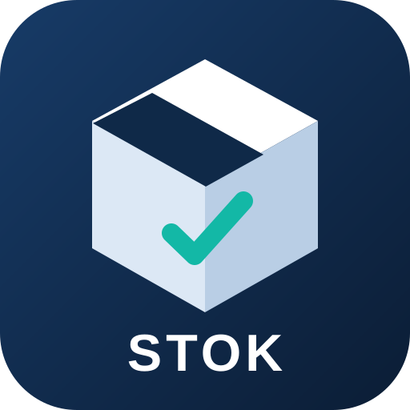

Administrador geral
Visão consolidada de todas as empresas, gestão de empresas, relatórios gerais e acompanhamento do sistema.
Gestão de estoque, entregas e patrimônio

Ainda não existe administrador geral. Crie a primeira conta para proteger e administrar o sistema.
Esta opção aparece somente enquanto ainda não existir um administrador geral. Guarde sua senha em local seguro.
Acesse sua conta para continuar
Ambiente de gestão seguro
Crie uma empresa e um setor temporários para conhecer o sistema.
A empresa será identificada como TEMPORÁRIA e receberá o setor SETOR TEMPORÁRIO.
Informe seu e-mail para receber um link de recuperação.
Escolha uma senha com pelo menos 8 caracteres.
Preencha seus dados para solicitar acesso ao STOK
Sua solicitação será enviada ao administrador da empresa. O acesso será liberado após aprovação.
Seu cadastro foi recebido. Aguarde a aprovação do administrador da empresa.
Por segurança, informe sua senha atual antes de cadastrar uma nova.
Acesse as operações e consulte usuários e movimentações da sua empresa. O administrador geral pode alternar entre empresas ou consultar todas.
Sem empresa selecionada, os dados aparecem separados por empresa. Ao selecionar uma, o relatório mostra somente os registros dela.
Escolha uma empresa ou mantenha “Todas as empresas”.
Confira as informações vinculadas à sua conta e ao seu nível de acesso.
Resumo para o administrador geral comparar como cada perfil utiliza o STOK. As permissões reais continuam sendo aplicadas pela conta de cada usuário.
Visão consolidada de todas as empresas, gestão de empresas, relatórios gerais e acompanhamento do sistema.
Gerencia usuários, setores, estoque, entregas e relatórios somente da própria empresa.
Acompanha operações, solicitações, atividades e usuários dentro do setor autorizado.
Registra e consulta operações permitidas para seu setor, sem acesso às funções administrativas.
Altere sua senha por esta tela sempre que necessário.
Acompanhe movimentações, cadastros e acessos conforme as permissões do seu perfil.
Consulte os registros por assunto. Use o período, o setor e a pesquisa para refinar os resultados.
Atualize o painel para consultar os registros.
Selecione Atualizar painel para consultar os dados.
Mostra usuários cadastrados, situação da conta e último acesso registrado após a ativação deste recurso.
Consulte os registros existentes antes de cadastrar. As opções respeitam o nível de acesso da sua conta.
Selecione uma empresa no campo “Empresa em administração” para cadastrar e consultar usuários e setores.
O administrador geral pode cadastrar empresas e criar o primeiro administrador de cada uma.
Somente o administrador da empresa pode consultar e atualizar os dados da sua própria empresa.
Os setores Estoque, Administração e Cozinha são criados automaticamente. O administrador pode acrescentar outros.
Canal direto do administrador geral com os administradores de cada empresa.
Canal interno de mensagens
Confira os cadastros que aguardam aprovação. Administradores de empresa veem somente solicitações da própria empresa.
Faça uma cópia antes de qualquer manutenção. A restauração substitui os dados atuais pelos dados do arquivo selecionado.
Consulte empresas, setores, usuários, mercadorias e bens permanentes cadastrados. Senhas e dados secretos não são exibidos.
Disponível somente para administrador. Exclusões devem preservar o histórico e ser feitas por desativação.
Consulta consolidada de usuários, produtos, movimentações, entregas, prestações de contas, autorizações e atividades conforme seu nível de acesso.
Organize o trabalho da equipe por situação, responsável, setor e prazo.
Cadastre no setor Estoque os materiais de consumo (mercadorias) e os bens duráveis (patrimônio). Depois, os demais setores solicitam os itens e confirmam o recebimento antes de prestar contas.
| Produto | Código | Quantidade | Unidade | Entrada | Validade / alerta | Saída do estoque | Saída do setor | Setor responsável | Observações | Ações |
|---|
| Bem | Nº patrimônio | Quantidade | Entrada | Saída do estoque | Saída do setor | Setor responsável | Estado de conservação | Cadastrado por | Ações |
|---|
Consulta consolidada para o Administrador Geral STOK. Permite editar cadastros, desativar e reativar acessos, preservando o histórico.
| Nome | Perfil | Setor | Situação | Data do cadastro |
|---|
O relatório por e-mail é enviado como arquivo CSV. Operadores recebem apenas as próprias movimentações.
| Data | Registro | Operação | Item | Quantidade | Origem | Destino |
|---|
O Estoque separa e transfere materiais após aprovar as solicitações. O setor destinatário confirma o recebimento e tem 7 dias para registrar consumo, extravio, dano, doação, venda ou devolução. Toda devolução só retorna ao saldo do Estoque depois da confirmação de recebimento pela equipe do Estoque. Cada etapa registra data, hora e responsável.